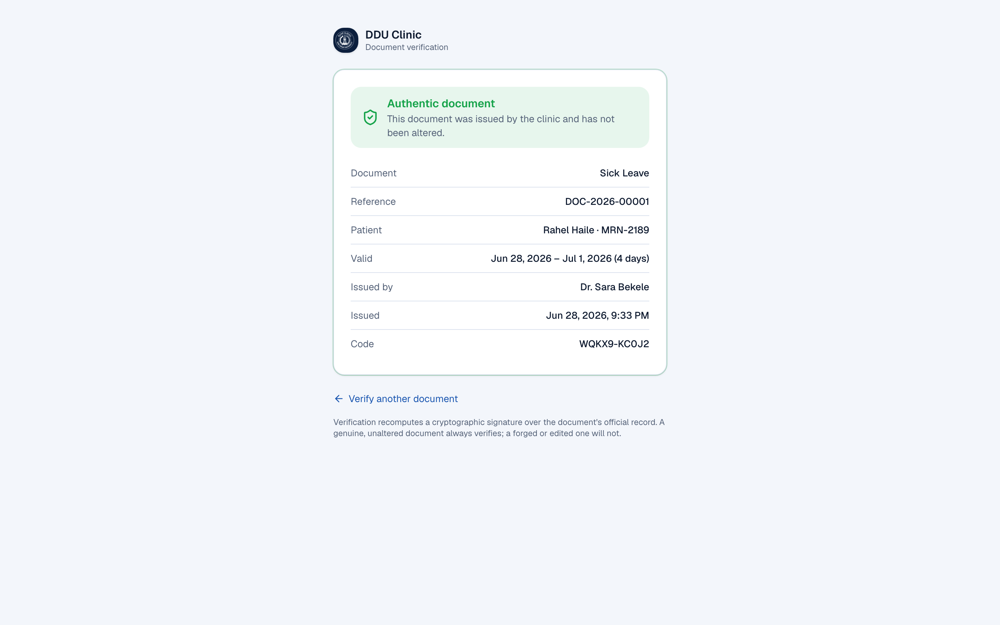

A cloud-native, serverless, modular service-layered clinic management platform for the Dire Dawa University Student Clinic Center — governed by a declarative finite-state-machine engine, backend-driven affordances, and tamper-evident document verification.
A guided path through the platform — from the executive picture down to the data model, security posture, AI guardrails, and the roadmap.
The DDU Clinic platform is a from-scratch, cloud-native rebuild of the university's clinic management system — engineered so that process, security, and audit are one and the same act.
The DDU Clinic platform (package ddu-clinic, version 2.0.0) is the ERP-style clinic management system for the Dire Dawa University Student Clinic Center. It is a from-scratch Next.js 16 / React 19 / TypeScript rebuild that runs cloud-native and serverless on Vercel against a Neon serverless PostgreSQL database, accessed in production through a pooled connection.
Architecturally, the system is best described — honestly — as a modular, service-layered monolith that is decomposable: a single Next.js application whose modularity comes from a disciplined domain-service layer (src/server/services/*), one file per bounded context, each owning its own writes and its own state machine. It is not a set of running microservices, but the boundaries are already drawn so any context could be peeled off later with limited blast radius.
Three ideas make the platform distinctive and are woven through every module:
state column without first passing through the engine's validation gate./verify page recomputes the signature — a genuine document always verifies; a forged one never will.This document deliberately avoids overclaiming. The platform is a cloud-native, serverless, modular service-layered application — not literal microservices. The PWA is installable via a web manifest but is not yet an offline-caching service worker (Serwist is a dependency, not yet wired). Every claim in this document is traceable to source on branch feature/platform-v2.
A campus clinic serving thousands of students and staff runs on registration desks, triage rooms, consultation, a lab, a pharmacy, wards, referrals, HR and a store — the platform ties all of it into one governed spine.
A university clinic at the scale of a 5,000–10,000-student campus is a small hospital in disguise. On any given day it registers walk-ins, triages vitals, runs consultations, orders and results lab tests, dispenses medicines from expiring batches, admits and discharges inpatients, refers complex cases to external hospitals, bills for services, manages staff leave and attendance, and keeps a store of assets and supplies. Done on paper or across disconnected spreadsheets, this fragments the patient record, loses the audit trail, and makes it impossible to know — at any moment — who is responsible for what right now.
The specific failure modes the platform is designed to eliminate: a nurse and a receptionist disagreeing about whether a patient has been sent to the doctor; a lab result that never makes it back to the ordering physician; a medicine dispensed from a batch that expires next month while an older batch sits on the shelf; a sick-leave certificate that a student photoshops; a staff member on approved leave who can still log in and act.
The platform gives every clinical and operational process a single, role-aware state machine. Each hand-off — reception to triage, triage to doctor, doctor to lab, lab back to doctor, doctor to pharmacy — is a guarded transition that is validated on the server, wrapped in a database transaction, written to an audit trail, and fanned out as a notification to the next team, all in one atomic act. The workflow, the audit record, and the hand-off notification are the same operation.
Because the buttons a user sees and the transitions the server accepts are both projected from one declarative table, the interface can never offer an action the backend would refuse — and gating or adding an action is a one-line change to a machine definition.
Access is governed by role-based access control across eight staff roles, plus a self-service student portal. MANAGER is always privileged and passes every role guard.
| Role | Primary responsibility | Home surfaces |
|---|---|---|
| MANAGER | Oversight, configuration, reports, feature flags, billing voids; always passes role guards. | Reports, Settings, Billing |
| RECEPTIONIST | Front-desk registration and visit intake; billing and payments; referral acknowledgement. | Reception, Billing |
| NURSE | Triage and vitals capture; ward settling and discharge; admissions. | Triage, Wards |
| DOCTOR | Consultations: order labs, prescribe, refer, admit, complete; Saba clinical copilot. | Consultations, Patients |
| LAB_TECH | Lab worklist: collect, process, submit results back to the ordering doctor. | Laboratory |
| PHARMACIST | Dispensing queue and FEFO stock; batch/expiry inventory; suppliers. | Pharmacy, Inventory |
| HR | Leave requests and approvals (drives the on-leave lockout), attendance, rosters. | Human Resources |
| STORE_KEEPER | Non-medical inventory and assets; stock requests; purchase orders and goods receipt. | Store & Assets |
| STUDENT | Self-service portal: own appointments, documents, visit history, and the Saba health guide. | Student Portal |
A layered, cloud-native architecture: React Server Components and an installable PWA at the edge, server actions and route handlers, domain services fronting the FSM engine, Prisma, and Neon Postgres — with a handful of external systems on clean adapters.
The platform follows a strict request-inward flow. The client renders Server Components and Server-Action forms; those call into the domain service layer; services are the only code that writes, and every write that changes an entity's state passes first through the FSM engine. Persistence is via Prisma to Neon Postgres. External systems — Auth.js, an OpenAI-compatible AI provider for Saba, and the university SIMS — are reached through narrow adapters, never inline.
Client (RSC + installable PWA) → server actions / route handlers → domain services (FSM engine) → Prisma → Neon Postgres, with external systems on adapters.
flowchart TD
subgraph CLIENT["Client — Edge"]
RSC["React Server Components
App Router pages"]
CC["Client Components
affordance-driven UI"]
PWA["Installable PWA
web manifest, themed"]
MW["Middleware
edge-safe Auth.js JWT gate"]
end
subgraph SERVER["Server — Node runtime (Vercel serverless)"]
SA["Server Actions
"use server""]
RH["Route Handlers
/api/saba · /api/auth"]
subgraph SVC["Domain Service Layer — src/server/services/*"]
VIS["visit · lab · pharmacy
ward · referral · billing"]
OPS["hr · store · inventory
appointment · documents"]
end
FSM["FSM Engine
resolveTransition · affordances"]
AI["Saba AI orchestrator
src/server/ai/*"]
end
subgraph DATA["Data"]
PR["Prisma Client
src/server/db.ts"]
NEON[("Neon Postgres
pooled connection")]
end
subgraph EXT["External systems (adapters)"]
AUTH["Auth.js / NextAuth v5
credentials + MFA"]
LLM["AI provider
Groq / OpenAI / Ollama"]
SIMS["University SIMS
student lookup"]
end
RSC --> SA
CC --> SA
CC --> RH
MW -. protects .-> RSC
SA --> SVC
RH --> SVC
RH --> AI
SVC --> FSM
SVC --> PR
AI --> LLM
SVC --> SIMS
PR --> NEON
SA -. session .-> AUTH
MW -. session .-> AUTH
classDef ext fill:#fbf4e4,stroke:#e0a112,color:#5c4708;
classDef data fill:#e5eaf3,stroke:#0c1f3d,color:#0c1f3d;
class AUTH,LLM,SIMS ext;
class PR,NEON data;
Authentication is deliberately split for the edge. src/auth.config.ts is an edge-safe configuration with no Prisma or Node APIs and empty providers; it is used by src/middleware.ts to do cheap JWT-based route protection at the edge without dragging Prisma into the edge bundle. The full src/auth.ts — credential providers, bcrypt, Prisma — runs on the Node runtime. Routes that need Node opt in explicitly: the Saba route sets export const runtime = "nodejs" and dynamic = "force-dynamic".
Every module is backed by a service in src/server/services/* — visit, lab, pharmacy, ward, referral, billing, hr, inventory, store, appointment, clinical, patient, documents, document-signing, notifications, events, mfa, webauthn, settings — plus src/server/fsm/* (state authority), src/server/ai/* (Saba), and src/server/integrations/* (SIMS). UI and API routes call into these services; the services own all writes and all FSM gating. Because each is a clean module with an explicit interface and its own state machine, a bounded context could later become its own deployable unit.
The disciplined service boundary is what makes the "modular monolith that is decomposable" claim real rather than aspirational — the lines along which the system could split are already the lines along which it is built.
One declarative table decides which transitions are legal and who may fire them; the same table renders the UI; and a feature-flag registry decides which modules are even present. Together they make drift between UI and enforcement structurally impossible.
The finite-state-machine engine lives in src/server/fsm/engine.ts, with machine definitions in src/server/fsm/machines/*.ts and an XState mirror in src/server/fsm/xstate.ts. It is a tiny declarative engine — not raw XState at runtime. Each domain entity is described by a MachineDef: a table of states plus role-guarded transitions. A single TransitionDef carries the event name, one or more from states, a to destination, the roles allowed to fire it (omitted ⇒ any authenticated user), UI hints (label, description, intent), an optional form key naming data the client must collect first, and an optional runtime guard.
availableTransitions() — filters by state, then role, then guard; returns a serializable Affordance[] shipped to the client.canFire() — boolean: can this actor fire this event now? (delegates to the above).resolveTransition() — the validation gate services call before persisting; throws a typed FsmError (INVALID_STATE, ILLEGAL_TRANSITION, FORBIDDEN).The declarative table is the one authority for which transitions are legal and who may fire them. Services never mutate a state column without first calling resolveTransition. The same table drives the UI, so the buttons a user sees and the transitions the server accepts are guaranteed to agree.
Mirrored to XState: toXStateMachine() compiles each MachineDef into a real XState v5 statechart for visualization (Stately) and cross-checking in tests — the two stay lock-step.
The same declarative machine table both projects the affordance list the client renders and gates the write the server accepts, so the two can never diverge.
flowchart LR DEF["MachineDef
declarative table
states + role-guarded transitions"] subgraph READ["Read path — render"] AV["availableTransitions(state, role, ctx)"] AFF["Affordance list
event · label · intent · form"] BTN["Client renders one button
per affordance"] end subgraph WRITE["Write path — enforce"] FIRE["User fires event
via Server Action"] RES["resolveTransition(state, event, role)"] GATE{"legal state?
role allowed?
guard passes?"} OK["Apply side-effects in db.transaction
+ logTransition + notifyRole"] ERR["throw FsmError
INVALID_STATE · ILLEGAL_TRANSITION · FORBIDDEN"] end DEF --> AV --> AFF --> BTN BTN --> FIRE --> RES --> GATE DEF --> RES GATE -- yes --> OK GATE -- no --> ERR classDef ok fill:#e2f4ea,stroke:#1f9d5b,color:#12572f; classDef bad fill:#fbe6e8,stroke:#c23b46,color:#7d232c; class OK ok; class ERR bad;
Transition execution & audit. Every state change flows through a service (e.g. transitionVisit): load the entity, run the resolveTransition gate, apply event side-effects inside a db.$transaction (create the lab/drug order, mark a bed occupied, set closedAt), update the state column, write a StateTransition row, notify the next team, and revalidate. The StateTransition model is a generic platform-wide event log keyed by entityType/entityId.
This is a core architectural idea: the server decides what the client may do, and the client renders exactly that. Verified in code, the flow is:
visits/[id]/page.tsx calls visitAffordances(visit.state, actor), a thin wrapper over availableTransitions(visitMachine, state, { role }).Affordance[] into a client component — <VisitActions affordances={…} />.affordance.intent (primary/success/danger → button variants) and labelling it from affordance.label. If the affordance carries a form key, clicking opens the matching dialog to collect that data first.resolveTransition re-validates the same rule server-side. The client is never trusted; the affordance list is a convenience projection of an authority that is re-checked on write.The same pattern powers appointments, wards, referrals, lab orders, HR leave, billing, and store requests. Roles, legal transitions, button labels, styling intent, and required forms are all declared once in the FSM table — so the server enforcement can't drift from what the UI offers.
The registry src/lib/features.ts is a Fowler-style toggle registry and the source of truth: FEATURES: FeatureDef[] lists every flag with key, name, description, category, defaultEnabled, and group. DB FeatureFlag rows mirror the registry so a manager can flip toggles at runtime, and rolloutRoles supports PERMISSION-style role gating.
Release toggles let in-progress work ship disabled until ready.
Operational toggles for audit log, notifications and the like.
Gate by role or plan; e.g. optional two-factor auth.
A/B or pilot capabilities behind a controlled rollout.
Per-institution capability — the module set a facility gets.
Disabled modules drop from the sidebar; actions check isFeatureEnabled().
Resolution follows a clear precedence: isFeatureEnabled(key, role?) lets the DB row win, else the registry default, honoring rolloutRoles (MANAGER always passes). enabledFeatureSet(role?) yields the enabled keys used to filter nav and UI; setFeatureFlag() upserts and revalidates the layout; syncFeatureRegistry() idempotently upserts all registry flags into the DB. Nav items carry an optional feature key, so disabled modules simply vanish from the sidebar.
Roughly thirty-five feature flags across six groups, plus a module-by-module map of the whole platform. Categories carry intent — tenant capability, release toggle, operational switch, or permission gate.
| Key | Name | Description | Default |
|---|---|---|---|
module.reception | Reception & registration | Front-desk registration and visit intake. | ON |
module.triage | Nurse triage | Vitals capture and triage queue. | ON |
module.doctor | Consultations | Doctor consultation workspace. | ON |
module.lab | Laboratory | Lab orders, worklist and results. | ON |
module.pharmacy | Pharmacy | Dispensing and medicine inventory. | ON |
module.wards | Wards & admissions | Inpatient beds and admissions. | ON |
module.referrals | Referrals | External hospital referrals. | ON |
module.hr | Human resources | Staff, leave, attendance & payroll. | ON |
module.store | Store & assets | Non-medical inventory and assets. | ON |
module.reports | Reports & analytics | Management dashboards. | ON |
module.portal | Student portal | Student self-service portal. | ON |
module.billing | Billing & cashier | Charges, invoices and payments. | ON |
module.appointments | Appointments | Scheduling and calendar. | ON |
| Key | Name | Category | Default |
|---|---|---|---|
| CLINICAL | |||
clinical.sims_lookup | SIMS student lookup | TENANT | ON |
clinical.allergies | Allergy list | RELEASE | ON |
clinical.problem_list | Problem list | RELEASE | ON |
clinical.vitals_trends | Vitals trends | RELEASE | ON |
clinical.immunization | Immunizations | RELEASE | ON |
clinical.icd10 | ICD-10 coding | RELEASE | ON |
clinical.consent | Consent capture | RELEASE | OFF |
| DOCUMENTS — all TENANT | |||
docs.sick_leave | Sick-leave certificates | TENANT | ON |
docs.prescription_print | Prescription printout | TENANT | ON |
docs.referral_print | Referral letter | TENANT | ON |
docs.lab_report_print | Lab report printout | TENANT | ON |
| HR & STORE | |||
hr.attendance | Attendance & shifts | RELEASE | ON |
hr.payroll | Payroll | RELEASE | OFF |
hr.leave_balances | Leave balances | RELEASE | ON |
store.purchase_orders | Purchase orders | RELEASE | ON |
store.stock_counts | Stock counts | RELEASE | ON |
| PLATFORM / UX | |||
ux.command_palette | Command palette (⌘K) | RELEASE | ON |
ux.dark_mode | Dark mode | RELEASE | ON |
ux.notifications | Notifications centre | OPS | ON |
platform.audit_log | Audit log | OPS | ON |
platform.two_factor | Two-factor auth | PERMISSION | OFF |
ai.assistant | Saba AI assistant | RELEASE | OFF |
platform.white_label | White-label branding | TENANT | ON |
App routes live under src/app/(app)/** (staff shell), src/app/portal/** (student portal), and src/app/print/** (printables). Access rules are in SECTION_ACCESS (src/lib/rbac.ts); each module is backed by a service.
| Module | Routes | Roles |
|---|---|---|
| Dashboard | /dashboard — role-aware landing | any staff |
| Reception | /reception — registration, creates REGISTERED visits | RECEPTIONIST · MANAGER |
| Patients | /patients, /[id], vitals, allergies/problems/immunizations | RECEPTIONIST · NURSE · DOCTOR · MANAGER |
| Appointments | /appointments, /new, /[id] — scheduling FSM | RECEPTIONIST · NURSE · DOCTOR |
| Triage | /triage — vitals capture, triage queue | NURSE · MANAGER |
| Consultations | /doctor, /doctor/caseload, /visits/[id] — Saba copilot attaches here | DOCTOR · MANAGER |
| Laboratory | /lab, /lab/[id], /lab/catalog | LAB_TECH · MANAGER |
| Pharmacy | /pharmacy, /[id], /inventory, /suppliers | PHARMACIST · MANAGER |
| Wards | /wards, /wards/[id] — admission FSM | NURSE · DOCTOR · MANAGER |
| Referrals | /referrals, /new, /[id] — signed printable letter | DOCTOR · RECEPTIONIST · MANAGER |
| Queue board | /queue — live waiting-room display | any staff |
| Module | Routes | Roles |
|---|---|---|
| Billing | /billing, /billing/[id] — invoice FSM + printable receipt | RECEPTIONIST · MANAGER |
| Human Resources | /hr, /hr/leave, /attendance, /leave-balances, /roster | HR · MANAGER |
| Store & Assets | /store, /assets, /requests, /purchase-orders | STORE_KEEPER · MANAGER |
| Staff Directory | /staff, /staff/[id] | MANAGER · HR |
| Reports | /reports — Recharts dashboards | MANAGER |
| Settings | /settings + appearance, audit, features, organization, security | MANAGER |
| Student portal | /portal + appointments, documents, health (Saba), history | STUDENT |
The visit is the clinical spine. One machine carries a patient from registration through triage, consultation, lab, pharmacy, wards or referral, to completion — with lab results looping back to the doctor rather than closing the visit.
Machine: src/server/fsm/machines/visit.ts; orchestrator: transitionVisit in src/server/services/visit.ts. Each transition names the roles allowed to fire it; resolveTransition() throws unless both the state and the actor's role are valid. Every move is wrapped in a DB transaction, logged to StateTransition, and often fans out a notification.
Reception → triage → doctor → lab → results → pharmacy → wards / referral → billing → completed. Labels show the firing role; lab results route back to the doctor.
flowchart TD START(["Patient arrives"]) --> REG["REGISTERED
Reception creates visit"] REG -->|"start_triage · NURSE/RECEPTIONIST"| TRI["TRIAGE
vitals captured"] REG -->|"send_to_doctor"| WFD TRI -->|"send_to_doctor · NURSE/RECEPTIONIST"| WFD["WAITING_FOR_DOCTOR
doctor assigned"] WFD -->|"begin_consultation · DOCTOR"| CONS["IN_CONSULTATION"] CONS -->|"order_labs · DOCTOR"| WFL["WAITING_FOR_LAB
LabOrder created → notify LAB_TECH"] WFL -->|"lab_results_ready · LAB_TECH"| LRR["LAB_RESULTS_READY
notify ordering doctor"] LRR -->|"resume_consultation · DOCTOR"| CONS CONS -->|"prescribe · DOCTOR"| WFP["WAITING_FOR_PHARMACY
DrugOrder created → notify PHARMACIST"] WFP -->|"resume_consultation · DOCTOR"| CONS WFP -->|"dispensed · PHARMACIST"| DONE CONS -->|"refer · DOCTOR"| REF["REFERRED
Referral issued"] REF -->|"complete · DOCTOR/RECEPTIONIST"| DONE CONS -->|"admit · DOCTOR/NURSE"| ADM["ADMITTED
bed occupied → notify NURSE"] ADM -->|"discharge · DOCTOR/NURSE"| DONE CONS -->|"complete · DOCTOR"| DONE["COMPLETED
diagnosis/ICD, closedAt · notify RECEPTIONIST · billing"] REG -.->|"cancel · MANAGER/RECEPTIONIST"| CAN["CANCELLED"] TRI -.->|cancel| CAN WFD -.->|cancel| CAN classDef fin fill:#e2f4ea,stroke:#1f9d5b,color:#12572f; classDef can fill:#f3f4f6,stroke:#9aa7ba,color:#4a5568; class DONE fin; class CAN can;
| Step | Event | From → To | Role(s) | Side-effects |
|---|---|---|---|---|
| Registration | (create) | → REGISTERED | RECEPTIONIST | Patient + visit created; optional SIMS lookup |
| Triage / vitals | start_triage | REGISTERED → TRIAGE | NURSE · RECEPTIONIST | Captures Vitals |
| Queue to doctor | send_to_doctor | → WAITING_FOR_DOCTOR | NURSE · RECEPTIONIST | Assigns doctorId |
| Start consult | begin_consultation | → IN_CONSULTATION | DOCTOR | Claims visit if unassigned |
| Order labs | order_labs | → WAITING_FOR_LAB | DOCTOR | Creates LabOrder → notify LAB_TECH |
| Results back | lab_results_ready | → LAB_RESULTS_READY | LAB_TECH | Notify ordering doctor |
| Re-assess | resume_consultation | → IN_CONSULTATION | DOCTOR | Doctor reviews results |
| Prescribe | prescribe | → WAITING_FOR_PHARMACY | DOCTOR | Creates DrugOrder → notify PHARMACIST |
| Dispense (close) | dispensed | → COMPLETED | PHARMACIST | Auto-close on full dispense → notify RECEPTIONIST |
| Refer out | refer | → REFERRED | DOCTOR | Creates Referral (ISSUED) |
| Admit | admit | → ADMITTED | DOCTOR · NURSE | Creates Admission, occupies bed → notify NURSE |
| Discharge | discharge | → COMPLETED | DOCTOR · NURSE | Frees bed; closes visit |
| Complete | complete | → COMPLETED | DOCTOR | Writes diagnosis/ICD, sets closedAt |
| Cancel | cancel | early → CANCELLED | MANAGER · RECEPTIONIST | Records reason |
On submit_results, the lab technician records per-item values and flags and, if the visit is WAITING_FOR_LAB, flips it to LAB_RESULTS_READY and notifies the ordering doctor. Results route back to the doctor for re-assessment rather than closing the encounter — the clinical judgement stays with the physician.
LAB_TECH-driven (collect, process, submit_results, complete); complete also DOCTOR; cancel LAB_TECH/MANAGER. Per-item result flags: NORMAL LOW/HIGH CRITICAL.
PHARMACIST-driven (record_partial, dispense_all, both form dispense; cancel PHARMACIST/MANAGER). Full dispense from the last stop auto-closes the visit.
The same FSM discipline governs the back office — HR leave that couples directly to account access, store procurement from request to goods-receipt, and pharmacy dispensing that always draws from the earliest-expiring batch first.
Machine: machines/leave.ts; service: services/hr.ts. Roles HR and MANAGER approve, reject, activate and approve return. The distinctive move: when a leave reaches ACTIVE, the employee's employmentStatus flips to ON_LEAVE, which blocks their login until they return — a clean example of process driving access control.
Submitted → approved → active → return-requested → returned. Activation locks the login; return (or cancel/reject of an active leave) restores it.
flowchart LR SUB["SUBMITTED
createLeaveRequest → notify HR"] APP["APPROVED
approver + comment → notify employee"] ACT["ACTIVE
employmentStatus = ON_LEAVE
login blocked"] RR["RETURN_REQUESTED
employee requests return"] RET["RETURNED
status = ACTIVE
login restored"] REJ["REJECTED"] CAN["CANCELLED"] SUB -->|"approve · HR/MANAGER"| APP SUB -->|"reject · HR/MANAGER"| REJ APP -->|"activate · HR/MANAGER"| ACT ACT -->|"request_return · employee"| RR RR -->|"approve_return · HR/MANAGER"| RET ACT -.->|"cancel restores access"| CAN APP -.->|cancel| CAN classDef lock fill:#fbe6e8,stroke:#c23b46,color:#7d232c; classDef ok fill:#e2f4ea,stroke:#1f9d5b,color:#12572f; class ACT lock; class RET ok;
Service: services/store.ts. Two chains: a general stock request FSM, and the purchase-order → goods-receipt flow. createStockRequest notifies STORE_KEEPER; each decision notifies the requester back. Purchase orders compute a total on creation; receivePurchaseOrder increments each line's received quantity and moves the PO to RECEIVED (all in) or PARTIALLY_RECEIVED. Every step logs a StateTransition and an audit entry.
Stock request (submitted → approved → fulfilled) and the parallel purchase-order chain (ordered → partially/fully received), with asset assignment as a sibling track.
flowchart TD
subgraph SR["Stock request — STORE_KEEPER / MANAGER"]
S1["SUBMITTED
notify STORE_KEEPER"] -->|"approve"| S2["APPROVED"]
S1 -->|"reject"| S3["REJECTED"]
S2 -->|"fulfill · STORE_KEEPER"| S4["FULFILLED
notify requester"]
end
subgraph PO["Purchase order — goods receipt"]
P1["ORDERED
createPurchaseOrder, total computed"] -->|"receivePurchaseOrder — some"| P2["PARTIALLY_RECEIVED"]
P1 -->|"receivePurchaseOrder — all"| P3["RECEIVED"]
P2 -->|"remaining received"| P3
P1 -.->|"cancel — open only"| P4["CANCELLED"]
end
subgraph AS["Assets"]
A1["assignAsset → ASSIGNED"] -->|"returnAsset"| A2["RETURNED / LOST / DAMAGED"]
end
S2 -. "restock trigger" .-> P1
classDef done fill:#e2f4ea,stroke:#1f9d5b,color:#12572f;
class S4,P3 done;
Service: services/pharmacy.ts. Stock is held in MedicationBatch rows (batch number, expiry date, quantity, cost/sell price, supplier). The critical rule is FEFO — First-Expiry-First-Out: dispenseFromBatches() decrements from batches earliest-expiry-first (orderBy: { expiryDate: "asc" }), writing a negative DISPENSE stock movement per batch for a complete audit trail. Partial fills mark items PENDING/OUT_OF_STOCK; full fills reach DISPENSED, and when the visit was WAITING_FOR_PHARMACY it flips to COMPLETED — pharmacy is the last stop.
A drug order draws from medication batches ordered by earliest expiry, logging one movement per batch, until the order is fully or partially filled — a full fill from the last stop auto-completes the visit.
flowchart TD ORD["DrugOrder · ORDERED
notify PHARMACIST"] --> Q{"stock on hand
for each item?"} Q -->|"yes"| SORT["Select MedicationBatch rows
orderBy expiryDate ASC (FEFO)"] SORT --> DEC["Decrement earliest-expiry batch
write negative DISPENSE StockMovement"] DEC --> MORE{"item quantity
satisfied?"} MORE -->|"no · next batch"| DEC MORE -->|"yes"| NEXT{"more items?"} NEXT -->|"yes"| SORT NEXT -->|"all filled"| FULL["DISPENSED"] Q -->|"insufficient"| PART["PARTIALLY_DISPENSED
items PENDING / OUT_OF_STOCK"] FULL --> CLOSE{"visit was
WAITING_FOR_PHARMACY?"} CLOSE -->|"yes"| DONE["Visit → COMPLETED
notify RECEPTIONIST"] CLOSE -->|"no"| END(["order closed"]) classDef done fill:#e2f4ea,stroke:#1f9d5b,color:#12572f; classDef warn fill:#fbf4e4,stroke:#e0a112,color:#5c4708; class FULL,DONE done; class PART warn;
Dispensing the earliest-expiring stock first minimizes wastage from expiry and is the accepted good-practice for pharmacy inventory. Low-stock (on-hand ≤ reorder level), near-expiry (≤ 90 days) and expired batches are computed on demand and surfaced through management dashboards and Saba's operational context.
settle, NURSE) → DISCHARGED (frees bed, closes visit); transferBed moves patients with occupancy bookkeeping.recordPayment posts a payment and notifies MANAGER.Layered defence: role-based access control, dual Auth.js credential providers, multi-factor authentication with passkeys, an on-leave login lockout, a best-effort audit trail, edge middleware, and cryptographically verifiable documents.
The Role enum defines eight roles. Session guards in src/server/session.ts (all "server-only") provide getActor(), requireStaff(), requireStudent(), and requireRole(...roles) — the last always lets MANAGER through, else redirects non-matching roles to /dashboard. SECTION_ACCESS maps each top-level section to the roles allowed (or null = any authenticated staffer), and canAccess() drives both the sidebar and section guards.
Middleware route protection (src/middleware.ts) runs the edge-safe Auth.js config. Public paths are /, /login, /student-login, and /verify[/…]. Unauthenticated users are redirected to the correct login preserving callbackUrl; students are confined to /portal and staff hitting /portal are bounced to /dashboard.
src/auth.ts)staff — email + password; looks up the lower-cased email, rejects inactive accounts, bcrypt.compares the password. Blocks any non-ACTIVE employment status via BlockedSignin. If MFA is enabled, requires a valid second factor.
student — studentId + password against Patient.portalPasswordHash, gated on portalEnabled. Students get role: null, kind: "student". Session strategy is JWT.
mfa.ts, webauthn.ts)otpauth — base32 secret, 6-digit/30s, ±1 step drift, QR enrolment.@simplewebauthn — rpID/origin derived from request headers so it works on any host.usedAt stamped).When a LeaveRequest reaches ACTIVE, the employee's employmentStatus becomes ON_LEAVE. The staff authorize flow rejects any non-ACTIVE status, so on-leave, suspended, and terminated staff cannot sign in. Process state and access control are the same fact.
audit(actorId, action, entityType?, entityId?, meta?) writes to AuditLog. It is best-effort: a logging failure must never break the primary operation, and if the actorId foreign key can't be resolved (e.g. a session that predates a reseed) it retries as a system entry. Separately, logTransition() writes the FSM StateTransition trail, and notifyRole/notifyUser fan notification rows to a role or an individual.
Every issued document and referral carries a short public verify code (printed as text and QR) and an HMAC-SHA256 signature over the record's immutable facts (src/server/services/document-signing.ts). The signing key is DOCUMENT_SIGNING_SECRET (falling back to AUTH_SECRET, then a dev default). Documents are signed on creation; referrals are signed lazily on first print. Verification recomputes the HMAC from the stored record and compares with timingSafeEqual — a photoshopped certificate will not verify; a genuine one always will.
Signing HMACs a canonical string of immutable facts and stores it with a verify code; the public /verify route recomputes and timing-safe-compares, yielding valid / invalid / revoked / not-found.
flowchart LR
subgraph SIGN["Sign — on issue (referrals lazily on first print)"]
FACTS["Immutable facts
docNo · type · patient/visit ids
dates · days · issuer · issuedAt"]
CANON["canonical() deterministic string"]
HMAC["HMAC-SHA256
key = DOCUMENT_SIGNING_SECRET"]
STORE[("Store signature + verifyCode
Crockford base32, grouped ABCDE-FGHIJ")]
FACTS --> CANON --> HMAC --> STORE
end
subgraph VERIFY["Public /verify/[code] — no login"]
SCAN["Scan QR / type code"]
LOOK["verifyByCode() — look up
IssuedDocument or Referral"]
REVK{"revoked or
CANCELLED?"}
RECOMP["Recompute HMAC from stored record"]
CMP{"timingSafeEqual
matches stored signature?"}
SCAN --> LOOK --> REVK
REVK -->|"yes"| RV["REVOKED"]
REVK -->|"no"| RECOMP --> CMP
CMP -->|"yes"| OK["VALID — issued & unaltered"]
CMP -->|"no"| BAD["INVALID — altered, do not accept"]
LOOK -->|"no record"| NF["NOT FOUND"]
end
STORE -. "prints QR → /verify/code" .-> SCAN
classDef ok fill:#e2f4ea,stroke:#1f9d5b,color:#12572f;
classDef bad fill:#fbe6e8,stroke:#c23b46,color:#7d232c;
classDef warn fill:#fbf4e4,stroke:#e0a112,color:#5c4708;
class OK ok;
class BAD bad;
class RV,NF warn;
The public verify page renders one of four states, each with a distinct icon and tone: valid "issued by the clinic and has not been altered", invalid "details don't match — may have been altered, do not accept", revoked, and not found. Verification trusts the server's recomputation, not anything printed on the page.
One assistant with two faces — a clinical copilot for doctors and a caring health guide for students — built on a provider-agnostic engine and wrapped in a deliberately strict, read-only guardrail spine.
Saba (src/server/ai/saba.ts, src/app/api/saba/route.ts, src/components/saba/*) is gated by the ai.assistant flag. It talks to any OpenAI-compatible /chat/completions endpoint, so it runs on Groq, OpenAI, Ollama, or a self-hosted gateway with no code change — purely env-configured. SABA_PROVIDER selects per-provider defaults (groq → openai/gpt-oss-120b in the demo config; openai → gpt-4o-mini; ollama → llama3.1), overridable by SABA_BASE_URL, SABA_API_KEY, SABA_MODEL. Ollama needs no key, so Saba can run fully on-prem with no data leaving the clinic. Responses stream: streamSaba() is an async generator that parses SSE data: lines and yields token chunks the browser appends live.
Scope staff, mounted app-wide as a floating widget when ai.assistant is on. History-aware (last 12 turns) and role-aware, with live read-only tooling per role. For a doctor on a real open visit it becomes a clinical copilot: history-aware differentials, tests to consider, red-flag flagging — framed as decision support.
Scope student, in the portal — "a caring health guide … like a kind older sister." Uses the student's own past visits only, to give gentle self-care advice and nudge them to visit the clinic or seek emergency care when appropriate. Explicitly not a doctor.
User → session → feature gate → role/scope authorization → server-built read-only context → provider stream → CTA links rendered as pill buttons.
flowchart TD
U["User asks Saba"] --> R["/api/saba route handler (Node runtime)"]
R --> A1{"session?"}
A1 -->|"no"| E401["401 Unauthorized"]
A1 -->|"yes"| A2{"ai.assistant enabled?"}
A2 -->|"no"| E403["403 Forbidden"]
A2 -->|"yes"| A3{"provider configured?"}
A3 -->|"no"| E503["503 Unavailable"]
A3 -->|"yes"| SCOPE{"scope?"}
SCOPE -->|"student"| ST{"actor.kind == student?"}
ST -->|"no"| E403
ST -->|"yes"| SCTX["buildStudentContext(actor.id)
OWN record only"]
SCOPE -->|"staff"| STF{"actor.kind == staff?"}
STF -->|"no"| E403
STF -->|"yes"| ROLE["buildStaffContext(role)
role-tailored live snapshot"]
ROLE --> CLIN{"role in DOCTOR/NURSE/MANAGER
AND real visitId opened?"}
CLIN -->|"yes"| DCTX["buildDoctorContext(patientId)
patientId re-derived from the visit server-side"]
CLIN -->|"no"| SKIP["no deep patient context"]
SCTX --> PROMPT["Assemble system prompt
+ guardrails + context"]
DCTX --> PROMPT
SKIP --> PROMPT
PROMPT --> LLM["streamSaba() → OpenAI-compatible provider
temperature 0.3, stream"]
LLM --> OUT["ReadableStream → chat UI appends tokens"]
OUT --> CTA["Markdown links → pill CTA buttons
hand off do-actions to a real page"]
classDef bad fill:#fbe6e8,stroke:#c23b46,color:#7d232c;
class E401,E403,E503 bad;
Saba's constraints are enforced in both the system prompt and the route. Four layers:
Saba is READ-ONLY: it can look up and explain but cannot make any change, approve, order, dispense, book or edit anything, and never claims it did. It has no tools that mutate — it only reads context the server pre-builds. To do something, it emits a markdown link to the exact page, rendered as a pill-shaped CTA button.
STAY ON TASK — Saba only helps with this clinic. Asked anything unrelated (trivia, coding, maths, essays, jokes, world facts, chit-chat) it declines in one short line. The student persona gently declines and offers health help instead.
Students: must be kind === "student"; context is built from actor.id only — own record only. Staff: deep clinical patient context loads only for DOCTOR/NURSE/MANAGER and only for a real visitId the user opened; the server re-derives patientId from the visit, never from a client-supplied id. This closes the "ask about an arbitrary MRN" hole.
SAFETY_DOCTOR: decision support, never a decision maker; no definitive diagnosis; differentials and tests framed as considerations; flag red flags; note clinical correlation. SAFETY_STUDENT: a friendly guide, not a doctor — do not diagnose or prescribe. The chat header carries an "AI · verify advice" badge.
Route-level enforcement (route.ts) is the true gate: it returns 401 without a session, 403 if the flag is off or the persona/role mismatches, and 503 if no provider is configured. Because Saba is read-only and re-derives patient identity server-side, the worst-case blast radius of a prompt-injection attempt is bounded to information the actor was already authorized to see.
buildStaffContext({id, role}) assembles a role-specific "what needs my attention" snapshot — all read-only, all server-side:
| Role | Live snapshot Saba can answer from |
|---|---|
| MANAGER | In clinic now / completed today; who's on leave + pending count; stock lows, batches expiring ≤90d, expired; open POs + pending stock requests. |
| PHARMACIST | Prescriptions awaiting dispensing; low-stock list; expiry counts (≤90d / expired). |
| LAB_TECH | Worklist counts by state (ordered / collecting / in-progress / results ready). |
| HR | Pending leave requests (names); who's currently on leave; staff present today. |
| STORE_KEEPER | Pending stock requests (item × qty); open POs; low-medicine count. |
| NURSE | Patients waiting for a doctor; inpatients on ward; bed occupancy. |
| RECEPTIONIST | Registered today; waiting for a doctor now. |
| DOCTOR | Your open patients right now; plus deep buildDoctorContext "chart on a page" for the open visit. |
Six document types, each an immutable snapshot printed on a white-label letterhead and sealed with a scannable verify code. Below, a faithful recreation of the sick-leave certificate the platform produces.
The DocumentType enum covers SICK_LEAVE, PRESCRIPTION, REFERRAL, LAB_REPORT, ADMISSION_SUMMARY, VISIT_SUMMARY, each with a print route. Every issued document is an immutable IssuedDocument row with a docNo (e.g. DOC-2026-00042) and a payload JSON snapshot of exactly what was printed, so re-prints reproduce the original even if the underlying record later changes. The shared Letterhead reads from getBranding(), so white-label branding flows into every printout.
Faithful recreation of src/app/print/sick-leave/[docId]/page.tsx with the shared Letterhead, Field, SignatureLine, and VerifySeal components. The QR grid is a stylized placeholder; the live seal embeds a real QR pointing at /verify/<code>.
The QR and code on every document point at the public /verify page — no login needed. Anyone (a faculty member, an employer) can confirm a certificate's authenticity in seconds. The page recomputes the cryptographic signature over the official record; a genuine, unaltered document always verifies, a forged one never does.

/verify/[code] result page — recomputing the HMAC over the clinic's official record to confirm a document is issued and unaltered.Alongside sick-leave, the platform issues signed printables for visit summaries, referral letters, and discharge summaries. The discharge summary is a client component with "Include sections:" checkboxes so the clinician chooses which blocks appear before printing, and computes length-of-stay. All are signed and sealed.
Concise previews of the visit-summary, referral-letter and discharge-summary printables (src/app/print/{visit-summary,referral,discharge}/*). Each embeds a verify seal identical in mechanism to the sick-leave certificate above.
The full schema is 1,185 lines of Prisma. At its heart is the Visit — the encounter the FSM drives — surrounded by identity, clinical detail, pharmacy stock, billing, and the cross-cutting platform tables.
The Visit is the hub of the clinical spine; Patient and User anchor identity; StateTransition and AuditLog are the cross-cutting event logs every entity feeds.
flowchart TD USER["User
role · employmentStatus · MFA"] PAT["Patient
mrn · type · studentId · portal"] DEPT["Department"] VIS["VISIT
the clinical spine
state · diagnosis · icdCode"] VIT["Vitals"] NOTE["ClinicalNote"] LO["LabOrder"] --> LOI["LabOrderItem
resultValue · flag"] DO["DrugOrder"] --> DOI["DrugOrderItem
dispensedQty"] MED["Medication"] --> BATCH["MedicationBatch
expiry · qty · FEFO"] BATCH --> MOVE["StockMovement"] REF["Referral
verifyCode · signature"] ADM["Admission"] --> BED["Bed"] --> WARD["Ward"] INV["Invoice"] --> INVI["InvoiceItem"] INV --> PAY["Payment"] DOCM["IssuedDocument
payload · verifyCode · signature"] APPT["Appointment"] LEAVE["LeaveRequest
drives ON_LEAVE lock"] ST["StateTransition
generic FSM log"] AUD["AuditLog"] NOTIF["Notification"] DEPT --> USER DEPT --> PAT PAT --> VIS USER -->|"doctor / createdBy"| VIS VIS --> VIT VIS --> NOTE VIS --> LO VIS --> DO DOI --> MED VIS --> REF VIS --> ADM VIS --> INV VIS --> DOCM PAT --> APPT USER --> LEAVE VIS -. logs .-> ST LO -. logs .-> ST DO -. logs .-> ST LEAVE -. logs .-> ST USER -. writes .-> AUD VIS -. fans .-> NOTIF classDef spine fill:#eaf1fb,stroke:#1a56b0,color:#0c1f3d,stroke-width:2px; classDef log fill:#e5eaf3,stroke:#0c1f3d,color:#0c1f3d; class VIS spine; class ST,AUD,NOTIF log;
User — staff account, hub of ~30 relations; RecoveryCode (hashed, single-use); Authenticator (WebAuthn passkey); Department.
Patient — MRN, type (STUDENT/STAFF/DEPENDENT/EXTERNAL), source (MANUAL/SIMS), portal login, demographics; owns visits, documents, appointments, invoices, allergies.
Visit (FSM-driven encounter) with Vitals, ClinicalNote, lab/drug orders, referrals, one admission, documents, invoices.
Medication → MedicationBatch (lot/expiry/qty) → StockMovement (RECEIVE/DISPENSE/ADJUST/EXPIRE/RETURN); DrugOrder → DrugOrderItem.
Ward → Bed → Admission; Invoice → InvoiceItem + Payment; LeaveRequest, Attendance, Shift, LeaveBalance.
IssuedDocument (payload + signature), Notification (recipient and/or role), StateTransition (generic FSM log), AuditLog, FeatureFlag, Setting.
Cloud-native and highly scalable, and — crucially — deployment-portable. The public demo runs on Vercel + Neon, but the exact same codebase deploys on-premises on a campus server with no data loss and no vendor lock-in. Configured entirely by environment, shipped by a git push, and installable as a PWA.
The live demo is hosted on Vercel for convenience — but that is not a requirement. DDU Clinic is a standard Next.js + PostgreSQL application, so production can run fully on-premises inside the university (a campus server or the DDU data centre) with the database and every record staying on university infrastructure. Because it is env-configured and container-friendly, moving from the cloud demo to on-prem is a configuration change, not a rewrite — and carries no data loss. Cloud-native by design, portable by principle.
The same application image runs as cloud serverless functions (demo: Vercel) or as a Node process on a campus server; PostgreSQL is Neon (cloud) or self-hosted on university infrastructure. AI can even run on-prem via Ollama, so no clinical data need leave the campus.
flowchart TD BROWSER["Browser / installable PWA
web manifest, themed, maskable icons"] subgraph RUNTIME["Runtime — same code, either target"] direction TB CLOUD["Cloud (demo): Vercel serverless
edge middleware + Node routes"] ONPREM["On-prem: Node server on a
campus machine (container-friendly)"] end subgraph DATA["PostgreSQL — your choice"] POOL["Pooled endpoint (PgBouncer)"] DB[("Neon cloud OR self-hosted on-prem")] end subgraph PROV["External providers"] AIP["AI provider
Groq / OpenAI / Ollama"] SIMSP["University SIMS"] end GIT["git push → CI
prisma generate & next build"] BROWSER --> CLOUD BROWSER --> ONPREM CLOUD --> POOL ONPREM --> POOL POOL --> DB CLOUD --> AIP ONPREM --> AIP CLOUD --> SIMSP ONPREM --> SIMSP GIT -. deploys .-> RUNTIME classDef ext fill:#fbf4e4,stroke:#e0a112,color:#5c4708; classDef data fill:#e5eaf3,stroke:#0c1f3d,color:#0c1f3d; class AIP,SIMSP ext; class POOL,DB data;
A standard Next.js App Router app. The demo runs as Vercel serverless functions; the identical build runs as a plain Node process on a campus server (container-friendly). Auth is edge-split: auth.config.ts (edge-safe) powers middleware; the full auth.ts runs on Node. No cloud-only APIs are required.
datasource db is plain postgresql via url = env("DATABASE_URL"). Point it at Neon (cloud demo, pooled PgBouncer) or a PostgreSQL server inside the university — every record then stays on campus infrastructure. Switching is one env var; no schema or code change.
All environment-specific behavior is env-driven: DATABASE_URL, AUTH_SECRET, AUTH_TRUST_HOST, DOCUMENT_SIGNING_SECRET, the SIMS_* integration, and the SABA_* AI knobs. Auth.js derives the URL from the request, so redirects follow whatever host/port you run on.
npm run build = prisma generate && next build, regenerating the Prisma client against the schema every time. In the cloud a git push triggers CI + rollout; on-prem the same command builds on the campus server (or in a container) — identical artifact either way.
The app is installable: public/manifest.webmanifest (standalone display, themed, maskable icons) is wired via metadata.manifest and appleWebApp. However, on this branch there is no service worker and no Serwist wiring — so today the PWA is manifest-based (installable, themed), not a fully offline-caching service worker. That is the intended direction (Serwist is already a dependency) but not yet active.
Because functions are stateless and short-lived, horizontal scale is handled by the platform; the bounded resource is database connections, which the Neon pooled endpoint absorbs. The audit and transition logs are append-only and keyed by entity, making them a natural feed for an external warehouse without touching the hot path.
Every future connector is a natural extension of foundations already in place — the pluggable-adapter pattern, the FSM engine, and signed documents. The following are clearly aspirational.
SIMS student lookup — a pluggable SimsProvider adapter with mock and HTTP implementations, env-selected, gated by clinical.sims_lookup. AI providers — the same pluggable pattern over OpenAI-compatible endpoints, on-prem-capable via Ollama. White-label branding — getBranding() injects org name, app name and theme colours into the live layout and every printout.
Beyond lookup: write-back of clinic-issued sick-leave to the registrar, enrolment/eligibility checks, automatic student-status sync. The SimsProvider interface is the seam.
Export aggregate indicators (visits, ICD-10 diagnoses, immunizations) to the national health-information exchange; the structured coded data already exists to feed it.
Plug billing into insurance eligibility + claims and mobile-money / telebirr-style gateways; the invoice FSM and Payment records are the integration points.
A remote-consultation channel layered onto the visit spine (a virtual IN_CONSULTATION), reusing the same ordering / prescribing / referral machinery.
Replace the 25-second notification polling with websockets / SSE / pub-sub so notifications, queues and ward boards update instantly across stations.
The StateTransition + AuditLog + domain tables are a ready warehouse feed for throughput, turnaround-time and utilization dashboards beyond the built-in reports.
Extend the /verify HMAC scheme to third-party verifiers (employers, faculty) and to signed QR on any future document type.
Native mobile and tablet clients, and a lightweight student app to check clinic status and queue position — building on the installable PWA foundation.
Each module already exposes a clean seam for campus-wide integration: SIMS ties the clinic to the student information system; signed documents + /verify give faculty and employers a trust endpoint; HR leave ↔ employmentStatus lockout models the access-control pattern a campus IAM could federate; billing is the hook for campus finance and insurance; and feature flags + white-label branding let the same platform serve other university health centres as a multi-tenant service. Because of the FSM engine, any new campus workflow is added as one declarative machine — with role-gated transitions, audit, and notifications for free.
The technology stack, demo accounts for evaluation, and a short glossary of the terms used throughout this document.
| Concern | Choice | Version |
|---|---|---|
| Framework | Next.js (App Router) | next 16.3.1 |
| UI runtime | React 19 (Server Components + Actions) | react 19.2.8 |
| Language | TypeScript | typescript ^5 |
| ORM | Prisma | ^6.19.3 |
| Database | PostgreSQL (Neon serverless in prod) | — |
| State machines | XState v5 + bespoke declarative engine | xstate ^5.32.5 |
| Auth | Auth.js / NextAuth v5 (beta) | next-auth ^5.0.0-beta.32 |
| Passwords | bcryptjs | ^3.0.3 |
| MFA — TOTP | otpauth + qrcode | otpauth ^9.5.1 |
| MFA — Passkeys | @simplewebauthn (server + browser) | ^9.0.3 |
| Styling | Tailwind CSS v4 | ^4 |
| PWA | Serwist (dependency; not yet wired) | ^9.5.12 |
| Charts | Recharts | ^3.10.1 |
| Forms / validation | react-hook-form + Zod | RHF ^7.85 · zod ^4.4 |
| Client data | @tanstack/react-query | ^5.101.4 |
| UI primitives | Radix UI · lucide-react · sonner · CVA | — |
| AI copilot | Groq / OpenAI-compatible (plain fetch) | — |
| Tests | Vitest + Testing Library + jsdom | vitest ^4.1.11 |
Staff sign in at /login with email + password. Pattern: <role>@clinic.test / password.
manager@clinic.test
doctor@clinic.test
nurse@clinic.test
labtech@clinic.test
pharmacist@clinic.test
reception@clinic.test
hr@clinic.test
store@clinic.test
Student signs in at /student-login: student ID DDU/1001/14 / password student. All demo passwords are for evaluation only.
/verify.